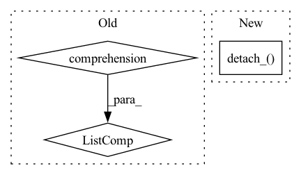

Pattern ID :32348
Before Change
x = x.to(self.device)
x = self.layers(x)
else:
x = [y.to(self.device) for y in x]
x = self.layers(*x)
// Last partition outputs results in a non tensor format
if not isinstance(x, Tensor):After Change
// we do not plan to do any recomputation.
if isinstance(x, Tensor):
x.detach_() .requires_grad_()
self.input_buffer[micro_batch_idx] = x
x = self.layers(x)
else:In pattern: SUPERPATTERN
Frequency: 3
Non-data size: 3
Instances Fragment ID: 94495991
Project Name: saareliad/ftpipe
Commit Name: 1eba81f7408b3aca28864f904c0c65ca860f6e3c
Time: 2019-11-28
Author: saareliad@campus.technion.ac.il
File Name: communication/partition.py
M Class Name: LastPartition
N Class Name: LastPartition
M Method Name: forward(3)
N Method Name: forward(3)
M Parent Class: Partition
N Parent Class: Partition
M File Name: communication/partition.py
N File Name: communication/partition.py
M Start Line: 131
M End Line: 154
N Start Line: 141
N End Line: 162
Before Change
x = self.layers(x)
else:
// FIXME: explicitly creating new objects
x = [y.detach().to(self.device).requires_grad_()
for y in x]
self.cache_input[micro_batch_idx] = x
x = self.layers(*x)
return x
else:After Change
x = self.layers(x)
else:
for tensor in x:
tensor.detach_() .requires_grad_()
self.input_buffer[micro_batch_idx] = x
x = self.layers(*x)
return x Fragment ID: 94495993
Project Name: saareliad/ftpipe
Commit Name: 1eba81f7408b3aca28864f904c0c65ca860f6e3c
Time: 2019-11-28
Author: saareliad@campus.technion.ac.il
File Name: communication/partition.py
M Class Name: Partition
N Class Name: Partition
M Method Name: forward(3)
N Method Name: forward(3)
M Parent Class: nn.Module
N Parent Class: nn.Module
M File Name: communication/partition.py
N File Name: communication/partition.py
M Start Line: 76
M End Line: 92
N Start Line: 87
N End Line: 93
Before Change
for obj in request_objects:
obj.wait()
g = [torch.cat(group)
for group in grouper(g, self.comm_handler.num_chunks)]
// g = torch.cat(g, self.comm_handler.
self.partition.recompute_and_backward(g, batch_idx)
self.trainer.step_on_computed_grads()After Change
// I added detach just in case.
for b in g:
// b.detach_()
b.detach_() .zero_()
// b.zero_()
// if not (b.grad is None):
// b.grad._zero() Fragment ID: 94495996
Project Name: saareliad/ftpipe
Commit Name: 4097453e3b6dccec2569aa74b5fb94b6c34b752f
Time: 2019-12-20
Author: saareliad@campus.technion.ac.il
File Name: pipeline/partition_manager.py
M Class Name: SinglePartitionManager
N Class Name: SinglePartitionManager
M Method Name: run_batch_backward(2)
N Method Name: run_batch_backward(2)
M Parent Class:
N Parent Class:
M File Name: pipeline/partition_manager.py
N File Name: pipeline/partition_manager.py
M Start Line: 231
M End Line: 247
N Start Line: 230
N End Line: 248